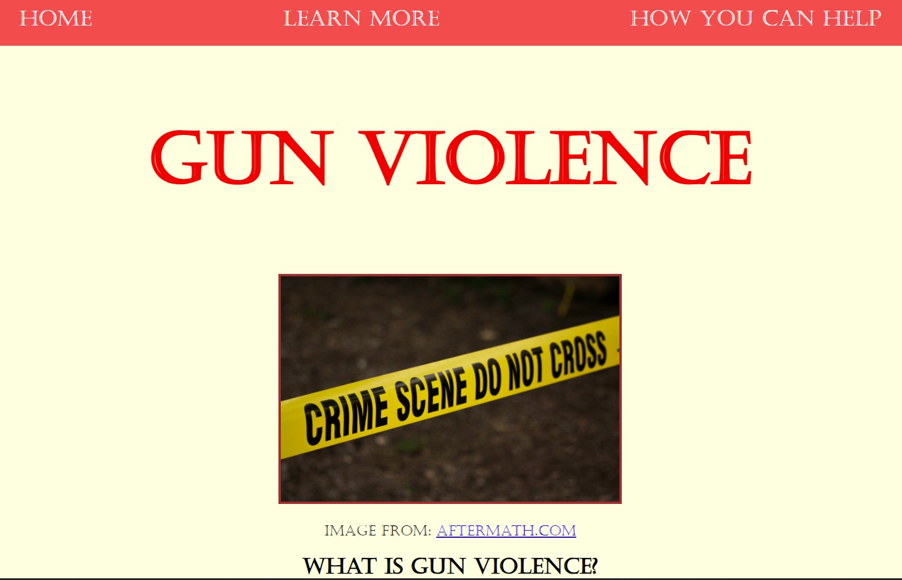
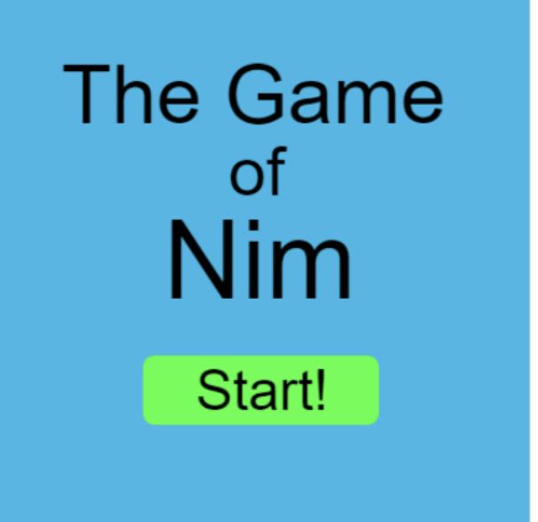
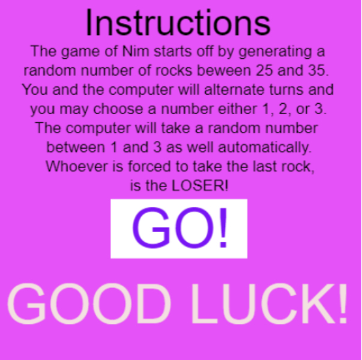
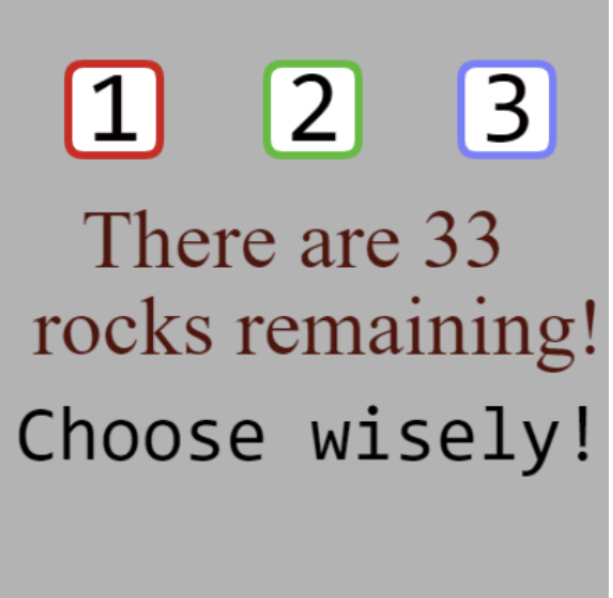
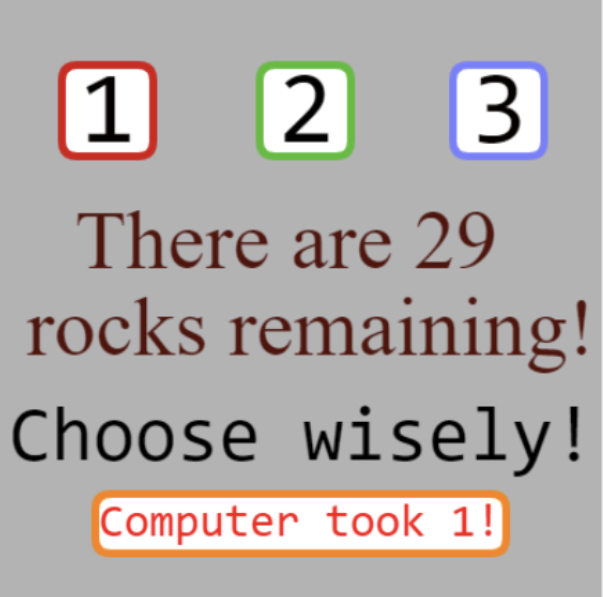
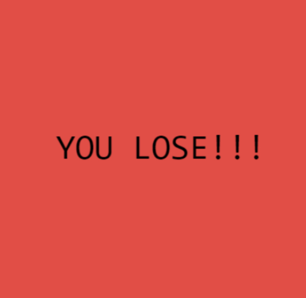
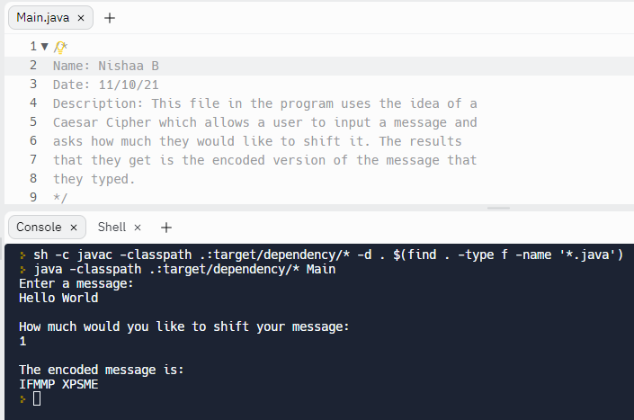
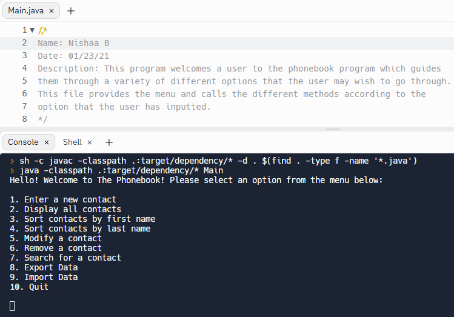
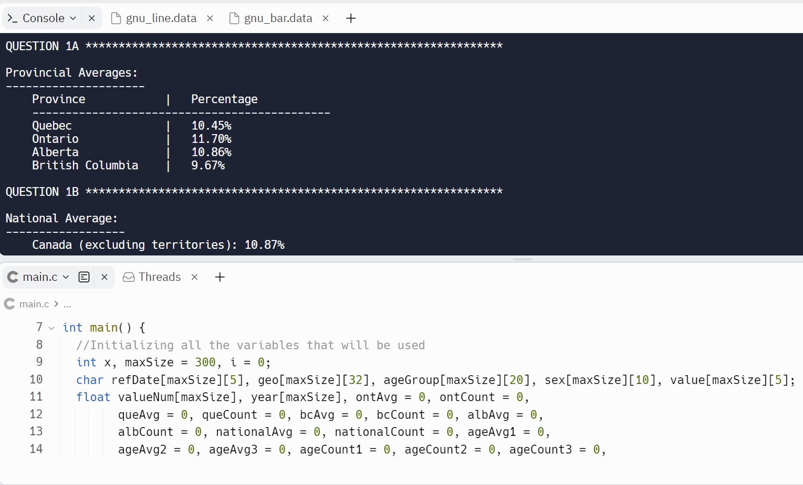

Below, you will find some of the amazing projects that I have created!
Activist Toolkit
This is a website that I created using HTML, CSS, and JavaScript, and it spreads awareness about a global issue which is Gun Violence.
Here is the link if you would like to check it out:
Check it out!The Game of Nim
    Above are the images of the first game that I created, "The Game of Nim" on Khan Academy using JavaScript.
Here is the link if you would like to check it out:
Check it out!Caeser Cipher
This is another program that I developed using Java on Replit called "Caeser Cipher."
Here is the link if you would like to check it out:
Check it out!The Phonebook
This is a program that I am very proud of as it contains lots of different components called the "Phonebook," which I created using Java on Replit once again.
Here is the link if you would like to check it out:
Check it out!The Diabetes Project
This is a program that I recently created within a team which makes calculations and conclusions based on real data collected by Statistics Canada about the prevalence of diabetes in Canada in its four most populated provinces (Ontario, Quebec, British Columbia and Alberta). We created this project using C on Replit.
Here is the link if you would like to check it out:
Check it out!